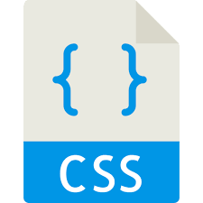
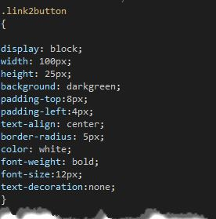
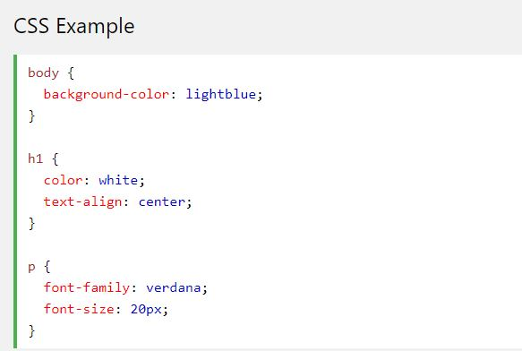
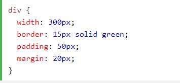
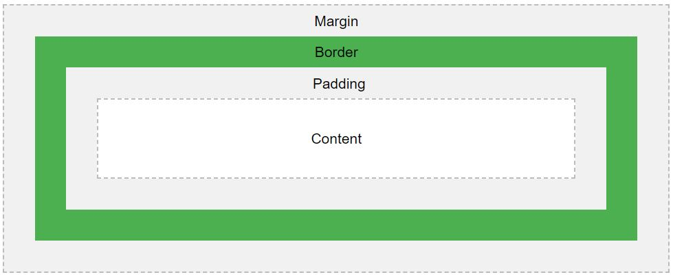

Aprendendo Css3
Nesta página você vai aprender CSS3 da melhor forma possivel, entenda agora um pouco mais sobre o css.
Página responsiva com css3
Criando uma página responsiva com CSS3 de forma fácil.
O Css3
É no css que vc trata os textos, imagens, videos, etc..
No Css vc pode aumentar o tamanho de imagens, textos, etc. Assim como também você pode mudar fonte, cor, posição entre outras coisas para melhor deixar o seu código.
Exemplo de modificações
Sobre o Css
O que é Css ?
O Cascading Style Sheets (CSS) é uma linguagem utilizada para definir a apresentação (aparência) de documentos que adotam para o seu desenvolvimento linguagens de marcação (como XML, HTML e XHTML e etc..). O CSS define como serão exibidos os elementos contidos no código de um documento e sua maior vantagem é efetuar a separação entre o formato e o conteúdo de um documento.
Por que o Css foi criado ?
Com a evolução dos recursos de programação, as tecnologias estavam adotando cada vez mais estilos e variações para deixá-las mais elegantes e atrativas para os usuários. Com isto, linguagens de marcação simples como o HTML, que era destinada para apresentar os conteúdos, também precisaram ser aprimoradas.
-Foram criadas novas tags e atributos de estilo para o HTML e em resumo, ele passou a exercer tanto a função de estruturar o conteúdo quanto de apresentá-lo para o usuário final. Entretanto, isto começou a trazer um problema para os desenvolvedores, pois não havia uma forma de definir, por exemplo, um padrão para todos os cabeçalhos ou conteúdos em diversas páginas. Ou seja, as alterações teriam que ser feitas manualmente, uma a uma.
-A partir destas complicações, nasceu o CSS. Primariamente, foi desenvolvido para habilitar a separação do conteúdo e formato de um documento (na linguagem de formatação utilizada) de sua apresentação, incluindo elementos como cores, formatos de fontes e layout. Esta separação proporcionou uma maior flexibilidade e controle na especificação de como as características serão exibidas, permitiu um compartilhamento de formato e reduziu a repetição no conteúdo estrutural de um documento.
-Com isto, as linguagens de marcação passaram novamente a exercer sua função de marcar e estruturar o conteúdo de um documento, enquanto o CSS encarregou-se da aplicação dos estilos necessários para a aparência dela. Isto é feito por meio da criação de um arquivo externo que contém todas as regras aplicadas e com isto, é possível fazer alterações de estilo em todas as páginas de um site e outros documentos que utilizam CSS de forma fácil e rápida.
-O CSS também permite que as mesmas marcações de um documento sejam apresentadas em diferentes estilos, conforme os métodos de renderização (como em uma tela, impressão, via voz, baseadas em dispositivos táteis, etc.). A maioria dos menus em cascata, estilos de cabeçalho e rodapé de páginas da internet, por exemplo, atualmente são desenvolvidos em CSS.
Agora em imagens, um pouco mais sobre css
Acima vemos o css sobre alinhamento de texto, mudança no tamanho da fonte de texto, mudança de coloração do texto e de fundo.
 as duas imagens acima conhecendo um pouco mais sobre a margin, a border, o padding e o content.
para assim ficar melhor e mais fácil o entendimento
Fontes para melhores pesquisas:
https://www.w3schools.com/css/css_image_transparency.asp
https://www.youtube.com/channel/UCIUOmAsotrzdK8VsZuHfVHw
https://tableless.github.io/iniciantes/manual/css/